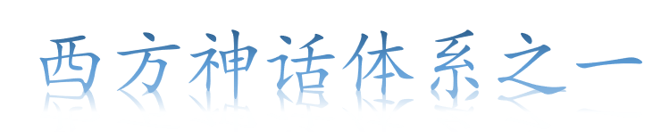
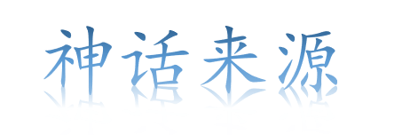

即一切有关古希腊人的神、英雄、自然和宇宙历史的神话.希腊神话是原始氏族社会的精神产物，欧洲最早的文学形式。大约产生于公元前8世纪，它在古希腊原住民长期口头相传并借鉴了流传到希腊和其它各国的神话的基础上形成基本规模，后来在荷马的《荷马史诗》和赫西俄德的《神谱》及古希腊的诗歌、戏剧、历史、哲学等著作中记录下来，后人将它们整理成现在的古希腊神话故事，分为神的故事和英雄传说两部分。

古希腊神话或传说大多来源于古希腊文学，包括如《荷马史诗》中的《伊利亚特》和《奥德赛》，赫西奥德的《工作与时日》和《神谱》，古风时期托名的《荷马颂歌》等经典作品，以及埃斯库罗斯、索福克勒斯和欧里庇得斯的戏剧。
希腊神话源于古老的爱琴文明.那些众人所创造的人、神、物的故事，经由时间的淬链，就被史家统称为“希腊神话”，西元前十一二世纪到七、八世纪间则被称为“神话时代”。神话故事最初都是口耳相传，直至西元前七世纪才由大诗人荷马统整记录于《史诗》中。
希腊神话有不同的版本，各个版本中众神的诞生顺序不同，也有一些其他版本没有的神灵出现（例如时间之神柯罗诺斯和定数女神阿南刻是俄尔普斯教派独有的神。混沌之神卡俄斯作为最初的神是无父无母的，而俄尔普斯教派却认为卡俄斯是柯罗诺斯的孩子。欧律诺墨是大洋河流之神俄刻阿诺斯的女儿，就是一个普通的海洋仙女，皮拉基人却把她视为是开天辟地的创世神）。
此处以目前流传最为广泛的赫西俄德的《神谱》为标准
在那原始时代，他们对自然现象，对人的生死，都感到神秘和难解，于是他们不断地幻想、不断地沉思。在他们想像中，宇宙万物都拥有生命。然而在多利亚人入侵爱琴文明后，因为所生活的希腊半岛人口过剩，他们不得不向外寻拓生活空间。这时候他们崇拜英雄豪杰，因而产生了许多人神交织的民族英雄故事。这些众人所创造的人、神、物的故事，经由时间的淬链，就被史家统称为“希腊神话”，西元前十一二世纪到七、八世纪间则被称为“神话时代”。神话故事最初都是口耳相传，直至西元前七世纪才由大诗人荷马统整记录于《史诗》中。